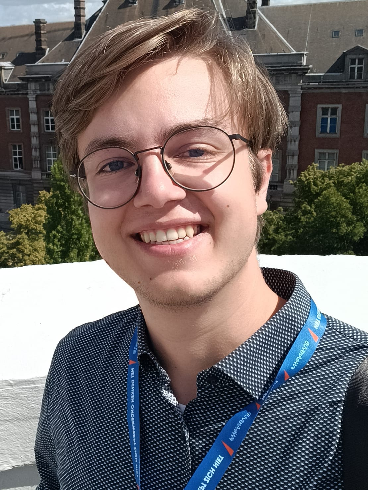

I am a Computer Science Master's student at Ulm University with a strong passion for software quality and engineering. Currently, I am working as Research Assistant at the Institute of Software Engineering and Automotive Informatics at the TU Braunschweig, where my research focuses on Quality Assurance of Configurable Systems. I explore methods to ensure reliability in complex, highly customizable software, leveraging knowledge compilation as a cornerstone for more advanced analysis and verification techniques.
Beyond my research, I am dedicated to technology education. I teach NWT (Natural Science and Technology) at Kepler Gymnasium Ulm, introducing students to the world of electronics and programming through hands-on Arduino projects that inspire creativity and problem-solving.
This is only a highlight summary. You can find a full list of my publications on Google Scholar.